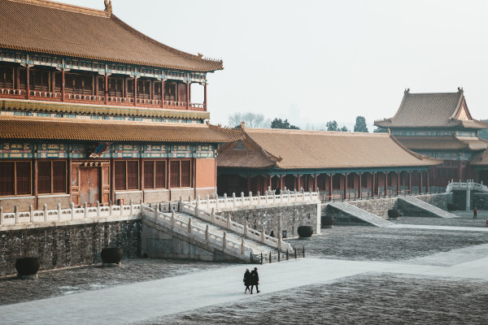

Ancient China: A Fascinating Journey through Time
Welcome to the enchanting world of ancient China! Travel back in time with us to explore the wonders of this ancient civilization, which thrived thousands of years ago and has left a lasting impact on the world we know today. Ancient China was an extraordinary civilization with a rich history of innovation, philosophy, and cultural achievements. Its legacy continues to inspire and captivate people around the globe. So, come and explore this ancient wonderland and immerse yourself in its captivating tales!
Timeline:
Xia Dynasty (c. 2070-1600 BCE):Considered the first dynasty in China, though much of its history is shrouded in legend and mythology.
Shang Dynasty (c. 1600-1046 BCE): Known for its sophisticated bronze artwork and early Chinese writing system, oracle bones.
Zhou Dynasty (c. 1046-256 BCE): A time of great cultural development and philosophical ideas, including Confucianism and Daoism.
Qin Dynasty (221-206 BCE):The first emperor, Qin Shi Huang, united China and began the construction of the Great Wall.
Han Dynasty (206 BCE - 220 CE):The first emperor, Qin Shi Huang, united China and began the construction of the Great Wall.
Three Kingdoms Period (220-280 CE):Marked by the division of China into three rival kingdoms, as depicted in the famous novel "Romance of the Three Kingdoms."
Tang Dynasty (618-907 CE)A period of prosperity and cultural brilliance, known for poetry, art, and inventions like printing and gunpowder.
Song Dynasty (960-1279 CE):Notable for its impressive achievements in literature, technology, and economic growth.
Yuan Dynasty (1271-1368 CE):Ruled by the Mongols under Kublai Khan, bringing foreign influences to China.
Ming Dynasty (1368-1644 CE):Famous for its maritime exploration led by Admiral Zheng He and the construction of the Forbidden City.
Qing Dynasty (1644-1912 CE):The last imperial dynasty in China, founded by the Manchus.
Fun Facts:
The ancient Chinese invented paper, which revolutionized communication and learning worldwide.
The Great Wall of China, one of the most iconic landmarks, is visible from space.
Chinese fireworks were first invented during the Han Dynasty and were used for celebrations and military signals.
The Chinese Zodiac, with its twelve animal signs, is still widely used to predict personality traits and fortunes.
The Silk Road was a vast network of trade routes connecting China with Europe and the Middle East, fostering cultural exchange.
Important Historical Figures:
Confucius: An influential philosopher whose teachings emphasized respect for tradition, education, and family values.
Emperor Qin Shi Huang:The first emperor of China, known for his unification of the country and the construction of the Great Wall.
H Emperor Wu of Han: A notable ruler during the Han Dynasty, promoting Confucianism and expanding the Silk Road trade.
Zheng He:An admiral and explorer during the Ming Dynasty, leading impressive voyages across the Indian Ocean.
Sun Tzu:An ancient military strategist and the author of "The Art of War," a famous book on military tactics still studied today.